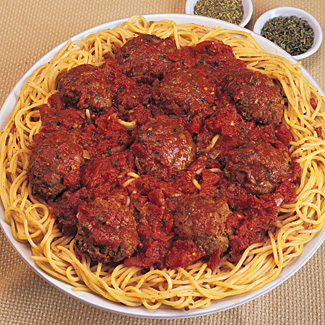

Step 7: Drain the pasta and return it to the pot. Spoon in about 2 cups of the tomato sauce, tossing well until the pasta is coated with sauce. Remove from the heat and toss in 2/3 cup grated cheese. Check the seasoning and add salt and pepper if necessary. Serve the pasta in warm bowls or piled high on a large warm platter. Spoon a little more of the sauce over the pasta and pass the remaining sauce separately. Pass the meatballs, family style in a bowl, or top the bowls or platter of spaghetti with them. Enjoy!
